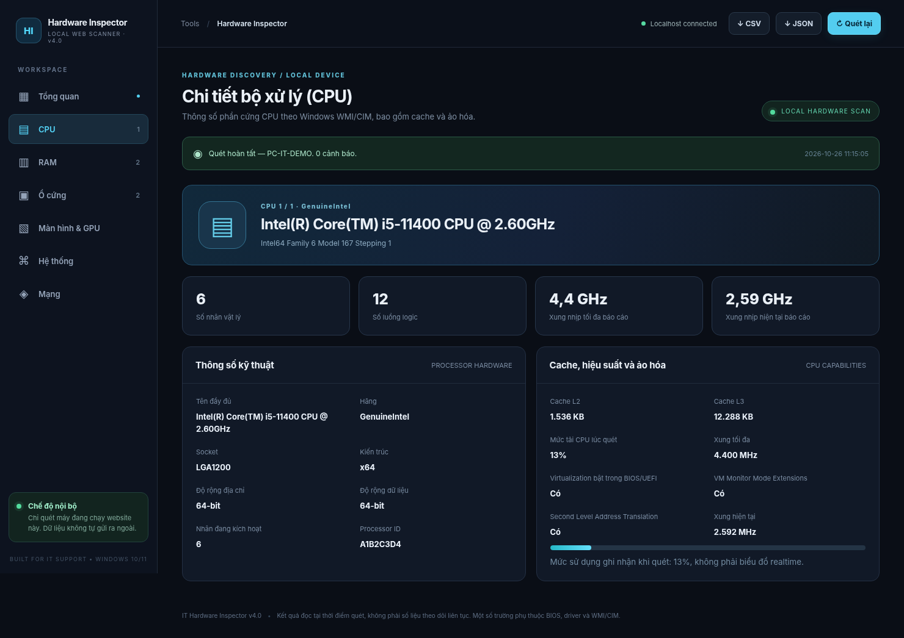

01
Quét tập trung
Xem CPU, RAM, ổ cứng, màn hình, card đồ họa và các thông tin máy trong cùng một giao diện.
Không cần đoán cấu hình. Xem chi tiết CPU, RAM, SSD/HDD, màn hình và toàn bộ hệ thống ngay trên một giao diện web trực quan, chạy cục bộ trên Windows.

Khi cần kiểm tra cấu hình, so sánh thiết bị hay hỗ trợ người dùng, bạn không nên phải mở hàng loạt cửa sổ Windows. Hardware Inspector tập hợp các thông tin quan trọng vào một màn hình.
Xem CPU, RAM, ổ cứng, màn hình, card đồ họa và các thông tin máy trong cùng một giao diện.
Giảm việc phải mở lần lượt Task Manager, System Information, Device Manager và các hộp thoại hệ thống.
Xuất CSV để tổng hợp trong Excel hoặc JSON để tích hợp vào quy trình quản lý thiết bị của bạn.
9 nhóm dữ liệu phần cứng và hệ thống — hiển thị có cấu trúc, dễ kiểm tra, dễ đối chiếu.
Tên bộ xử lý, hãng, socket, số nhân/luồng, xung nhịp do hệ thống báo, cache L2/L3, virtualization và mức tải tại thời điểm quét.
Dung lượng tổng, từng thanh RAM, khe cắm, tốc độ, hãng và loại DDR khi BIOS/SMBIOS cung cấp.
Nhận diện model, dung lượng, serial, kiểu kết nối và ổ SSD/HDD khi Windows xác định được.
Độ phân giải, số màn hình và tên/serial lấy từ EDID khi thiết bị và driver hỗ trợ.
Tên card đồ họa và thông tin driver, hỗ trợ kiểm tra cấu hình đồ họa của máy.
Hãng, model bo mạch chủ và mã serial được cung cấp bởi firmware.
Phiên bản hệ điều hành, build, kiến trúc 32/64-bit phục vụ hỗ trợ và tương thích.
Adapter, địa chỉ IP, MAC, gateway, thông tin DHCP giúp hỗ trợ các bước kiểm tra mạng.
Hostname, hãng, model, serial BIOS — hữu ích cho thống kê và kiểm kê thiết bị.
Một số trường có thể hiển thị “Không xác định” nếu BIOS, driver hoặc Windows không cung cấp đủ dữ liệu. Ứng dụng không tự suy đoán thông số.
Dữ liệu phức tạp được sắp xếp thành những phần dễ đọc. Chuyển tab để xem ảnh giao diện thật của phiên bản v4.
Kiểm tra nhanh cấu hình để đối chiếu yêu cầu phần mềm, tiếp nhận sự cố và ghi nhận thiết bị của người dùng.
Thu thập thông tin kỹ thuật của từng máy để lập danh mục, báo cáo và lên kế hoạch nâng cấp phần cứng.
Hiểu CPU, RAM, ổ cứng và màn hình đang sử dụng mà không phải tìm kiếm từng thông số ở nhiều vị trí.
Bản v4 quét trên chính máy Windows đang chạy công cụ, sau đó hiển thị kết quả qua trình duyệt ở địa chỉ localhost.
Tải file RAR phiên bản v4.0 bên dưới và giải nén toàn bộ thư mục bằng WinRAR hoặc phần mềm tương thích.
Mở CHAY_WEBSITE.cmd. PowerShell mở web server cục bộ; hãy giữ cửa sổ này chạy khi sử dụng.
Trình duyệt mở tại 127.0.0.1:8766. Website tự quét cấu hình; có nút quét lại và xuất CSV/JSON.
Công cụ kiểm tra phần cứng Windows dành cho bạn — tải bộ cài v4, giải nén, chạy và khám phá thông số ngay trên giao diện web cục bộ.
d857fca7550a4da357c4d2379c562bb103d213f275f8eceb7fd8615009d13004Các thông tin quan trọng trước khi sử dụng phần mềm.
CHAY_WEBSITE.cmd trên máy hỗ trợ.127.0.0.1:8766. Khi đóng cửa sổ đó, web server sẽ dừng. Đó là đặc điểm của bản v4 đã chọn.